| 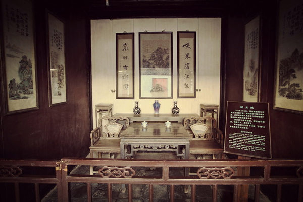 | 淮安周恩来故居。 周恩来1898年3月5日生于江苏淮安，望子成龙的父母给他取名“大鸾”，字翔宇，《山海经》中写道：“女牀之山，有鸟，其状如翟，名曰鸾鸟，见则天下安宁。”希望他可以像大鸟一样翱翔天空。读私塾的时候，周大銮改名为周恩来。 少年周恩来曾就读于奉天东关模范学堂，在这里度过了高小读书生活。在一次修身课上，老师向同学们提出了“为什么而读书”的问题，13岁的周恩来清晰而坚定地回答道：“为中华之崛起而读书！” |
| 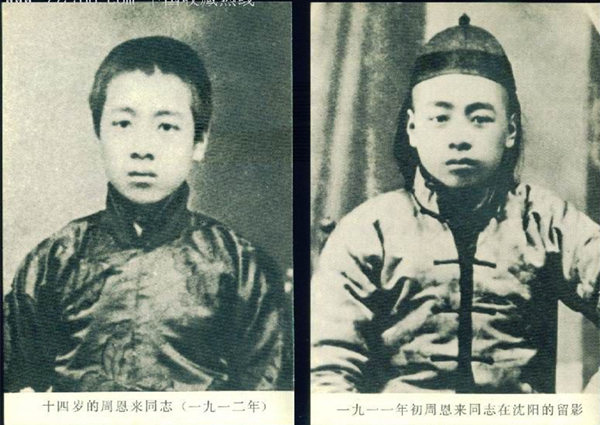 | 1913年，15岁的周恩来进入天津南开学校读书，在这里度过了4年学习生活。 |
| 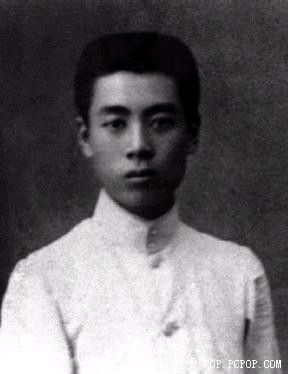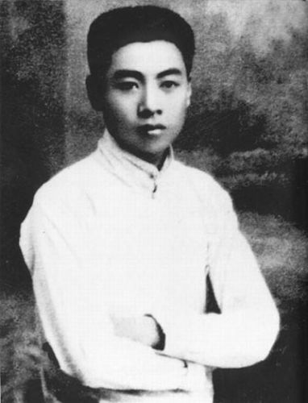 |
1916年，南开学校时期的周恩来。 1917年南开学校毕业照片，周恩来当时19岁。
|
“为中华之崛起而读书”这一激励中华儿女的励志名言，是1911年14岁的周恩来在回答老师提问时说出的。1898年3月5日，周恩来出生在江苏淮安。1910年来到东北，先在铁岭上小学，后又转到沈阳东关模范小学。1911年的一天，正在上课的魏校长问同学们：你们为什么要读书？同学们纷纷回答：为父母报仇，为做大学问家，为知书明礼，为让妈妈妹妹过上好日子，为光宗耀祖，为挣钱发财……等到周恩来发言时，他说：“为中华之崛起！”魏校长听到一惊，又问一次，周恩来又加重语气说：“为中华之崛起而读书！”周恩来的回答让魏校长大为赞赏。周恩来是如何确立起这一初心呢？
幼年童年时期的家庭变故使周恩来比同龄人更早成熟。周恩来一出生的第二天，他的外祖父万青选就去世了。不到半岁，又因小叔父周贻淦生病没有子女，按照淮安的风俗，周恩来被过继给小叔父做嗣子，大人们希望通过过继的方法，一能解决小叔父的传代问题，二能希望用过继这种当地认为是“冲喜”的方法治好小叔父的痨病。可是不久他的小叔父就去世了。到1907年春天，周恩来的生母万氏因家庭生活的操劳，在35岁时得了肺痨去世。不久养母陈氏也因病去世，10岁的周恩来作为长子就操办起养母的丧事，并用船把养母陈氏的遗体从清江浦运回淮城和小叔父合葬。家庭的变故让幼年童年时期的周恩来比同龄人更早地体会到失去亲人的痛苦、生活的艰辛和人情的冷暖，10岁时的周恩来已经“佐理家务，井然有序”。
童年生活的艰辛促使他要改变现状。周恩来的祖籍是浙江绍兴，外祖父的祖籍是江西南昌，到祖辈时两家到淮阴、淮安当县官，两家相识结为姻亲。祖父50多岁时就去世了，生前不事生产，不买地，只有房产。到了父辈，家庭开始中衰，叔父当师爷，父亲做文书常年在外不回家，入不敷出。周恩来从小就懂得生活艰难，特别是为了生母养母治病，常常把家里值钱的物件拿去典当换钱买药。童年生活的艰辛较早地让周恩来体谅到父辈的不易，没钱维持正常生活的艰辛也让他较早地懂得了家里的柴米油盐来之不易，过上好日子的朴素想法在少年周恩来的心里扎下了根。
四位女性的早期教育让他知书明礼。在周恩来的幼年童年生活中，有四位女性对他的成长产生了重要的影响。生母万氏，生于官宦之家（其父是淮阴县令），为人善良，性格爽朗，美丽端庄，具有良好的家庭教育素养。她生前处事精明干练，排难解纷的能力强，出面调解家族内纠纷时经常带周恩来同去，对幼年周恩来的基本礼仪、人情来往、主持公道、操持家务、做事认真细致以及人生观的形成都产生了重要影响。嗣母陈氏，受过教育，知书达礼，喜好安静，较早地对周恩来进行文化启蒙教育，经常给他讲故事，如《天雨花》《再生缘》里面的故事，教他认字学文化，还送他到私塾读书，所以从8岁开始周恩来就可以读小说《西游记》《水浒传》《红楼梦》等。周恩来从生母身上学到了爽朗的性格，从养母身上学到了好静的性格。乳母蒋氏，是贫苦农民，周恩来出生后她到周家做周恩来的乳母，一直到周恩来离开淮安去东北都在周家劳作，小时候的周恩来经常跟着蒋妈，看她劳动，蒋妈也教他认识各种农活和植物常识，还带他到老家和自己的孩子一起玩耍，让年幼的周恩来知道了农事和农民的艰苦生活。还有一位八婶母杨氏，在周恩来生母养母去世之后成了周恩来的实际抚养人，对周恩来的影响也很大，周恩来对八婶母的感情也很深。四位女性对周恩来的影响是多方面的，从基本生活能力、处世经验、人生观的形成，性格的养成到对社会的看法都有很大帮助。
参观关公祠和日俄战争遗址让他认识到落后就要挨打的惨痛教训。清末抗英名将关天培是淮安人，淮安城内建有关忠节公祠，周恩来少年时经常随养母陈氏到公祠里参观，养母给他讲解关天培抗英为国捐躯的故事，让少年周恩来对民族英雄产生崇敬之情。到东北上学期间，随同学到奉天南郊魏家楼小住，参观日俄战争遗址，听当地老人讲述日俄战争的经过和中国人民饱受的苦难，让他知道了落后就要挨打被侵略、国破家亡的道理。在他幼小心灵里萌生了为中华崛起、解救人民于水火之中的豪情壮志。
到东北上学接受西学教育，思想受到启蒙。周恩来小时候在淮安，除了得到养母陈氏的文化教育外，还在私塾读书学文化，到东北求学开始接触西学。周恩来1946年9月在接受美国记者李勃曼采访时说：“十二岁那年，我离家去东北，这是我生活和思想转变的关键，没有这一次的离家，我的一生一定也是无所成就，和留在家里的弟兄辈一样，走向悲剧的下场。”“从受封建教育转到受西方教育，从封建家庭转到学校环境。”到东北上学，让周恩来开阔了眼界，知道了外国的一些情况，也初步看到了国弱民穷受欺凌的国内现状，当听到辛亥革命爆发，推翻清朝统治的消息后，在学校率先剪去象征清朝臣民的辫子。于是在魏校长问同学们为何读书的时候，他能自然而然地说出“为中华之崛起而读书”的励志名言。
周恩来从小学时立志“为中华之崛起”而读书，到南开学校毕业时与同学们互赠“愿相会于中华腾飞世界时”的留言，到日本留学又回国参加五四运动，再到欧洲勤工俭学又回国投身革命……就一直为中华之崛起而奋斗。少年定下初心，之后为之奋斗终身，周恩来这种坚定的理想信念和执着的人生追求永远是我们共产党人学习的典范。
| 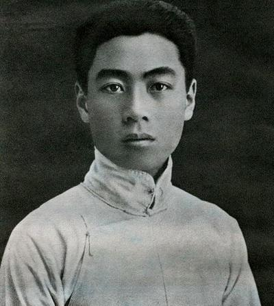 | 1917年，19岁的周恩来留学日本，寻求革命真理。临行前，他写下了这首诗：大江歌罢掉头东，邃密群科济世穷。面壁十年图破壁，难酬蹈海亦英雄。 |
| 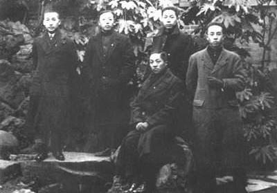 | 1917年9月，周恩来（后排右一）赴日本求学前与同学合影。 在日本，周恩来虽然相继参加东京高等师范和东京第一高等学校的招生考试未果，但他了解了日本的社会情况，接触了马克思主义思潮，开始向一个马克思主义者转变。 |
| 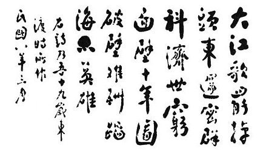 | 周恩来东渡日本求学时所作咏怀诗资料图片。 1919年，周恩来毅然决定，不再滞留日本，而“返国图他兴”。他回国后进入天津南开大学学习，投身于五四运动。 |
| 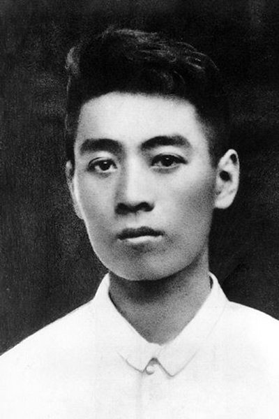 | 1920年11月11日，从日本归国不久的周恩来在上海乘法国邮轮“波尔多”号踏上了去法国勤工俭学的旅途。正是在法国，他开始走上一条职业革命家的道路，在这里，他参加了巴黎共产主义小组，成为中国共产党的创建人之一。 |
| 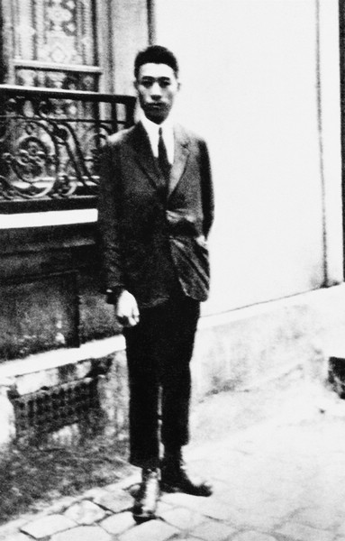 | 周恩来在巴黎的住所门前留影。 |
| 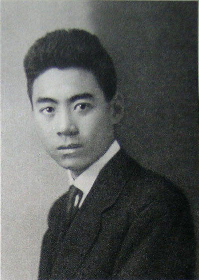 | 1921年，周恩来在伦敦留影 |
| 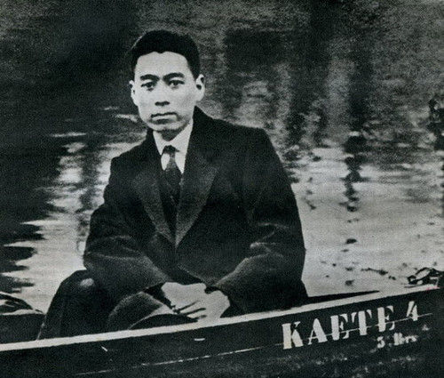 | 1922年，周恩来在德国柏林 |
| 1924年，周恩来和中国社会主义青年团旅欧之部的部分成员在巴黎的合影。前排左四为周恩来，左六为李富春，左一为聂荣臻，后排右三为邓小平。 |
| 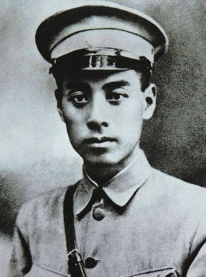 | 担任黄埔军校政治部主任的周恩来。 1924年，26岁的周恩来从法国回到国内。当时第一次国共合作正在蓬勃兴起，他被任命为黄埔军校政治部主任。黄埔军校的校长是蒋介石 |
1917年在天津南开学校毕业后赴日本求学，开始接触马克思主义，思想发生重要转折。1919年回国，9月入南开大学，在五四运动中成为天津学生界的领导人，并与运动中的其他活动分子共同组织进步团体觉悟社。1920年去欧洲勤工俭学。1921年加入中国共产党，坚定了共产主义的信仰。1922年和赵世炎等组织旅欧中国少年共产党(翌年改名为中国社会主义青年团旅欧支部)。任中国社会主义青年团旅欧支部书记，为中共旅欧支部领导人。1923年被国民党本部委任为国民党巴黎分部筹备员、国民党驻欧支部特派员和代理执行部长等职，主持国民党驻欧支部的工作。 1924年秋回国，在国共合作期间任广东黄埔军校政治部主任，国民革命军第一军政治部主任、第一军副党代表等职，并先后任中共广东区委员会委员长、常务委员兼军事部长，两次参加讨伐军阀陈炯明的东征，创建了行之有效的军队政治工作制度。1927年3月在北伐的国民革命军临近上海的情况下，领导上海工人第三次武装起义，赶走了驻守上海的北洋军阀部队。同年5月在中共第五次全国代表大会上当选为中央委员，在中共五届一中全会上当选为中央政治局委员。7月12日中共中央改组，他任中共中央政治局临时常务委员会委员。国共合作全面破裂后，和贺龙、叶挺、朱德、刘伯承等一起于8月1日在江西南昌领导武装起义，任中共前敌委员会书记。1928年在中共六届一中全会上当选为中央政治局常务委员。后任中央组织部长、中央军委书记。为保证中共中央在上海秘密工作的安全，为联系和指导各地区共产党领导的武装斗争，为发展在国民党统治区的秘密工作，起到了重要作用。在这一阶段的大部分时间内，他实际上是中共中央的主要主持者。
|